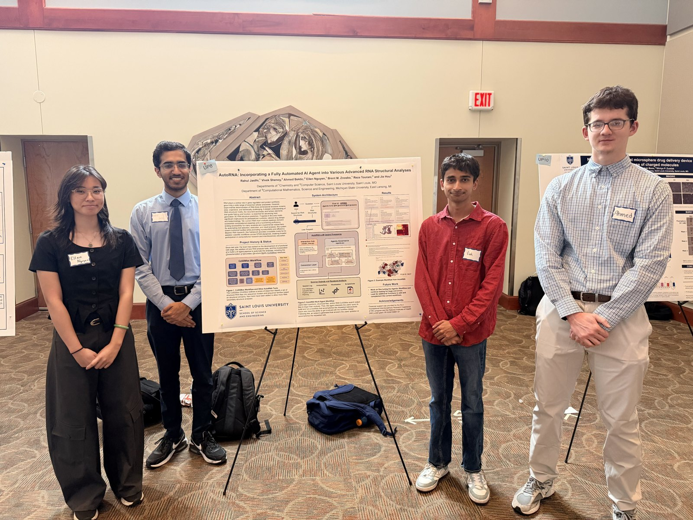
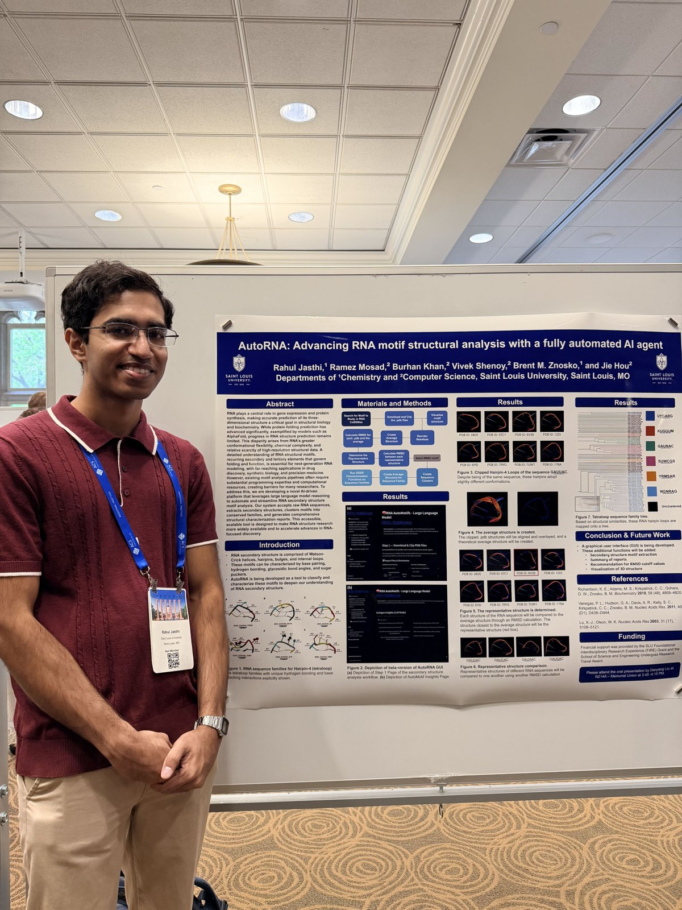
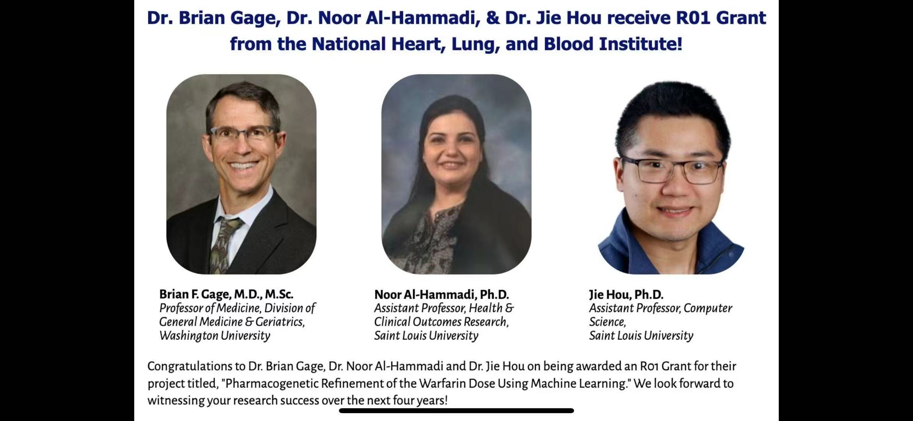
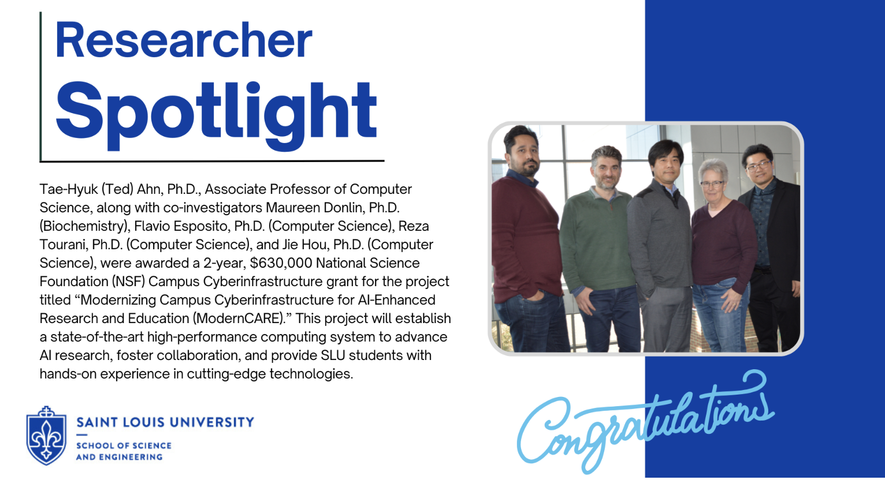
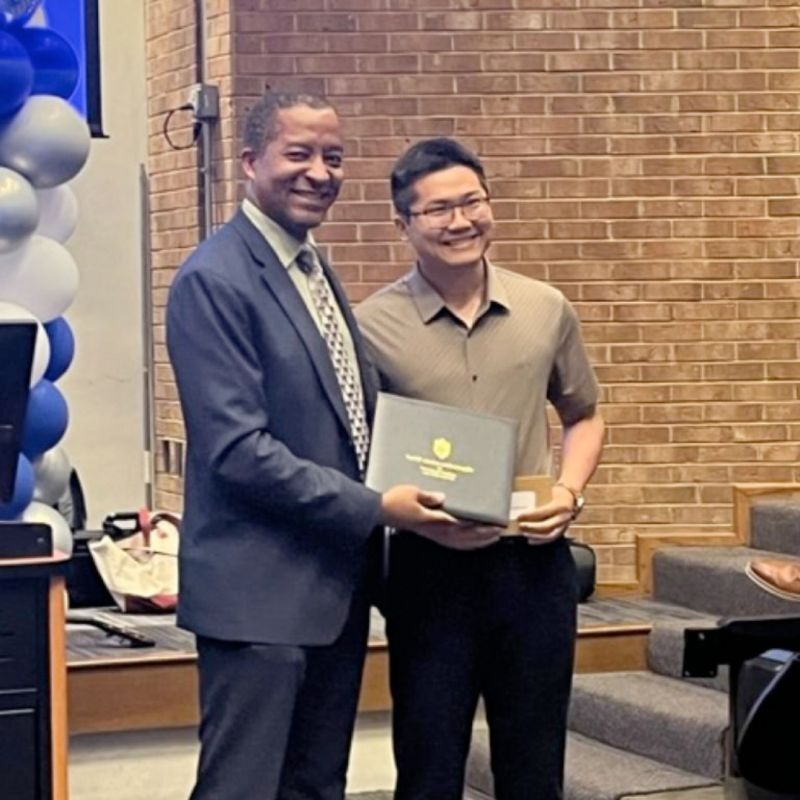
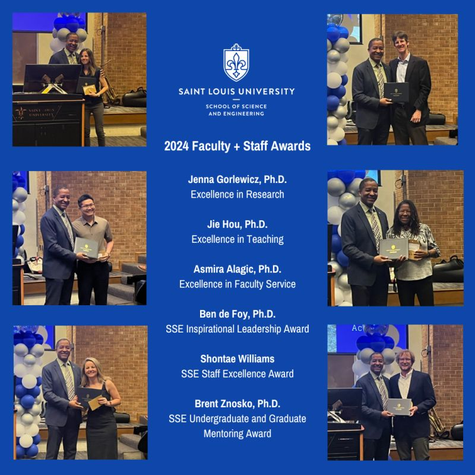
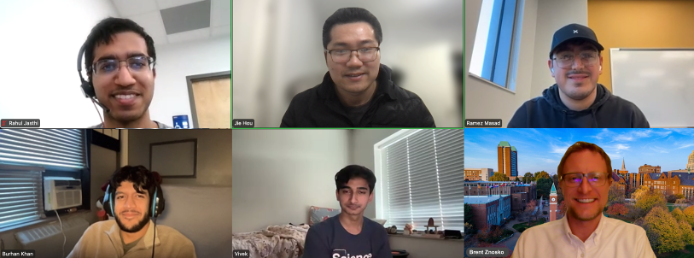
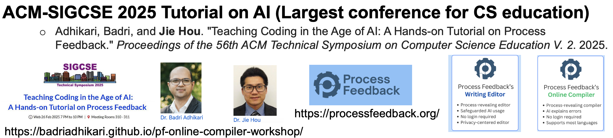

Computational Mathematics, Science & Engineering · Michigan State University
Hou Lab
AI and machine learning for biomolecular structure, omics, and health
Gallery
Moments from the lab: awards, grants, conferences, and team meetings. Click any image to enlarge.
{kind=link}

Poster: AutoRNA: Incorporating a Fully Automated AI Agent into Various Advanced RNA Structural Analyses. Rahul Jasthi, Vivek Shenoy, Ahmed Bektic, Ellen Nguyen, Brent M. Znosko, Reza Tourani, and Jie Hou.
Since the last poster presentation at the 2025 ACS Midwest Regional Meeting, AutoRNA has been integrated into a more comprehensive RNA structural analysis platform known as ARSMA (Analysis of RNA Structure and Motif Analysis). The purpose behind this new platform is still to improve our understanding of RNA structural motifs by increasing access to programming-intensive tools and analyses. However, improvements have been made to the overall tool. Beyond shipping the GUI, incorporation of the full CoSSMos workflow has been completed along with the incorporation of new tools like MotifFinder, MotifAlign, MotifCluster, MotifCharacterization, MotifRepCompare, MotifClade, and DSSRVisual. Each of these tools provides users access to novel functionality, including the abilities to extract individual motifs from a full RNA or RNA/protein complex, to categorize sets of RNA motifs into sequence families, and to compare different types of motifs.
Beyond this, the loose multi-agent setup has matured into a structured governance loop, where a Planner chooses an action, a Scientific Reviewer approves or rejects it, a Tool Selector calls the exact registered function, and an Executor runs it — all coordinated by an Interaction Hub and a Conversion Layer that refines user intent. Future work will focus on fine-tuning the agentic workflow, continued testing, and adding functions to complement the existing pipelines.
Supported by the SLU Foundational Interdisciplinary Research Experience (FIRE) program and NIH/NIGMS grant 1R15GM155891-01.
{kind=link}

Poster: AutoRNA: Advancing RNA motif structural analysis with a fully automated AI agent. Rahul Jasthi, Ramez Mosad, Burhan Khan, Vivek Shenoy, Brent M. Znosko, and Jie Hou. Departments of Chemistry and Computer Science, Saint Louis University.
RNA is crucial to the Central Dogma of Biology as it plays a critical role in gene expression and protein synthesis, yet resolving RNA 3D structure experimentally remains slow, expensive, and technically punishing. While protein structure prediction has advanced significantly with the advent of models like AlphaFold, RNA structure prediction has lagged behind, held back by RNA’s greater conformational flexibility, chemical complexity, and relative scarcity of high-resolution structural data. Improving our understanding of RNA structural motifs — recurring secondary and tertiary elements that govern folding and function — provides a promising path towards advancing RNA structure prediction, with far-reaching applications in drug discovery, synthetic biology, and personalized medicine. The problem is that motif analysis today demands intensive programming and computation, effectively gatekeeping the field from the students and smaller labs who could otherwise meaningfully contribute.
To address this, our group is developing AutoRNA, an AI agent that uses LLM reasoning to automate RNA motif analysis. Built on Microsoft’s AutoGen framework, the agent runs on an autonomous multi-agent architecture where a User Proxy simply approves the plan and the agents handle the rest, keeping the pipeline largely self-driving. We have also designed it to be extensible, allowing us to add new tools by defining more functions and updating a config, with no retraining required. At this point, the team has implemented the “Download and Clip .pdb files” and “Reorder Residues” steps from the CoSSMos workflow as working functions. Future work includes translating the remaining steps from the CoSSMos workflow into agent functions, adding optional capabilities like report summarization and RMSD cutoff recommendations, and shipping a GUI so students can use the tool directly.
Financial support was provided by the SLU Foundational Interdisciplinary Research Experience (FIRE) Grant and the School of Science and Engineering Undergraduate Research Travel Award.
{kind=link}

{kind=link}

{kind=link}

{kind=link}

{kind=link}

{kind=link}
